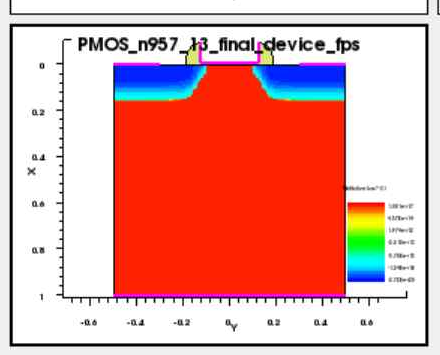
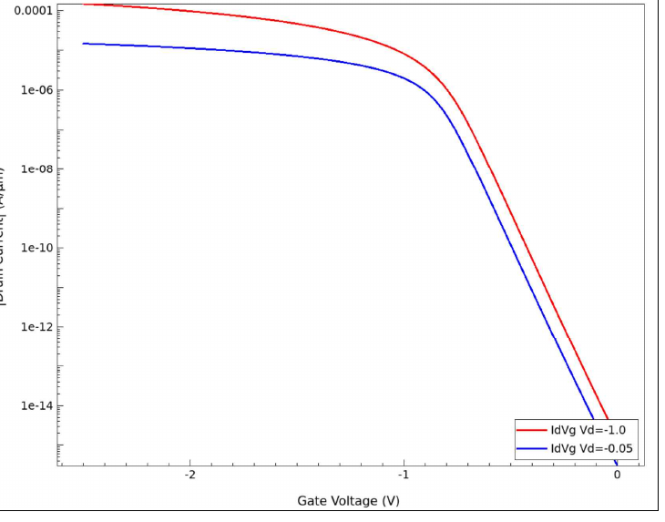
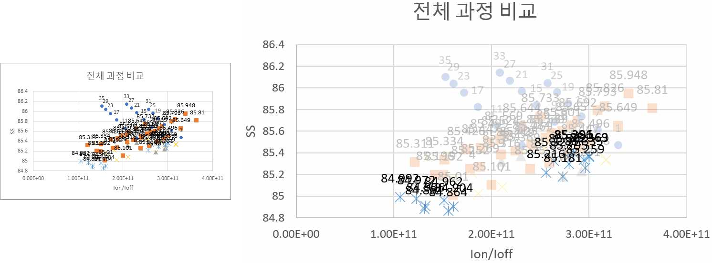
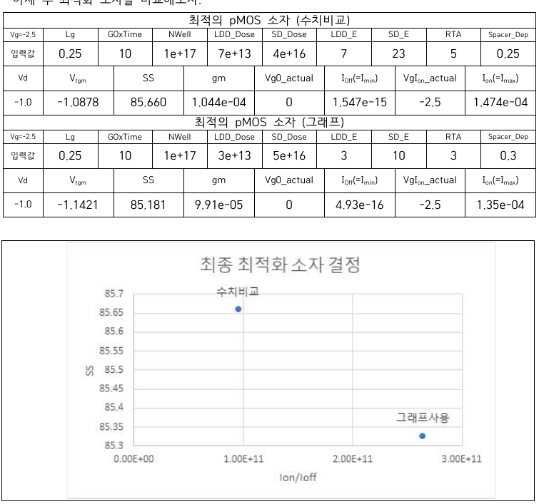

01 · OVERVIEW
nMOS 예제를 pMOS 공정으로 변환
기존 SimpleMOS 예제는 nMOS 기준이므로 body 극성, implant species, gate·drain bias 방향과 전류 처리 방식을 함께 바꿔야 합니다. 이 프로젝트에서는 SProcess–SDevice–SVisual 전체 흐름을 수정하고 Workbench split으로 주요 공정 변수를 비교했습니다.
02 · CONVERSION
구조·도핑·바이어스·전류 처리 변경
| nMOS configuration | pMOS configuration | Reason |
|---|---|---|
| PWell / Boron | NWell / Phosphorus | p-channel 형성을 위한 n-type body |
| Arsenic LDD | BF2 LDD | p-type extension 형성 |
| Phosphorus S/D | BF2 p+ S/D | pMOS Source/Drain 형성 |
| Positive Vg, Vd | Negative Vg, Vd | hole channel 형성 |
| Signed drain current | |Id| | 동일 기준의 metric 비교 |


03 · IMPLEMENTATION
SProcess·SDevice·SVisual 구현
NWell, BF2 LDD와 Source/Drain, RTA, Spacer를 Workbench parameter로 연결했습니다. SDevice에서는 음전압 drain/gate sweep을 구성하고, SVisual에서는 pMOS current magnitude를 사용해 Vtgm, SS, gm, Ion과 Ioff를 자동 추출했습니다.
04 · VERIFICATION
공정 구조와 전기적 동작 검증
전기적 결과만 확인하지 않고 gate oxide, poly, LDD, spacer, p+ Source/Drain, anneal, metal, reflect와 contact 단계가 의도대로 형성되는지 순서대로 확인했습니다.
05 · OPTIMIZATION
두 최적화 방식 비교
Method 1 · Numerical Comparison
각 단계에서 Ion, Ioff, SS, Vtgm과 변화율을 직접 비교해 높은 Ion 후보를 좁혔습니다.
Method 2 · Ion/Ioff–SS Plot
Ion/Ioff가 크고 SS가 작은 lower-right 영역을 기준으로 후보를 비교해 누설과 gate control을 함께 고려했습니다.

최종 조건은 모든 조합의 global optimum이 아니라, 평가한 split 범위에서 선택한 balanced condition입니다.
06 · FINAL RESULT
최종 공정 조건과 성능
| Parameter | Final Value |
|---|---|
| LDD_Dose / LDD_E | 3e13 cm⁻² / 3 keV |
| SD_Dose / SD_E | 5e16 cm⁻² / 10 keV |
| RTA | 3 s at 1000 °C |
| Spacer_Dep | 0.30 |
| Vg / Vd | -2.5 V / -1.0 V |

07 · LIMITATIONS
해석 범위와 다음 단계
- 순차적 후보 제거 방식이므로 변수 간 상호작용을 완전히 탐색하지 못했습니다.
- Ion/Ioff–SS 평가는 축 범위와 후보 중첩에 영향을 받을 수 있습니다.
- 현재 source는 보고서에 제시한 수정·추출 command이며 전체 project command는 아닙니다.
- 후속 단계에서는 full-factorial DOE, Pareto front와 자동 결과 수집이 필요합니다.
08 · RESOURCES